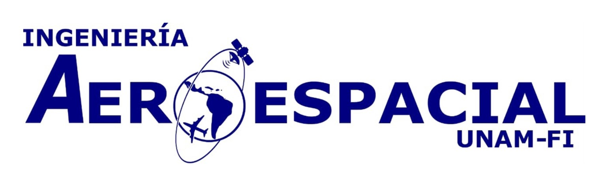

Introducción
Objetivos Educacionales del Programa
Atributos del Egresado
Perfil de Ingreso
Conocimientos
Habilidades
Actitudes
Intereses
Perfil de Egreso
Conocimientos
Habilidades
Actitudes
Perfil Profesional
Introducción
Ingeniería aeroespacial es el campo de la ingeniería relacionado con el diseño, desarrollo, construcción, pruebas y operación de vehículos que operan en la atmósfera terrestre o en el espacio exterior. Su área de influencia va más allá del desarrollo de aeronaves y naves espaciales, ya que impacta otros sectores de la economía como en la industria automotriz, en la industria médica, en la agricultura, en el desarrollo urbano, sin dejar de lado las telecomunicaciones y la seguridad nacional, así como en muchas actividades cotidianas de nuestra vida diaria.
La ingeniería aeroespacial cuenta un amplio espectro de áreas de conocimiento que le permite aportar elementos para resolver problemáticas con alto impacto social como:
- La formación de recursos humanos en un sector altamente especializado.
- El desarrollo de tecnología nacional que permita al país construir una soberanía tecnológica.
- La mejora de la colaboración transversal entre los actores de la triple hélice (academia, industria, gobierno) que permita detonar el sector aeroespacial.
- El desarrollo de actividades de alerta temprana que permita elaborar estrategias de protección civil y seguridad nacional a través de desarrollo de proyectos tecnológicos ante desastres por fenómenos naturales y actividad humana.
- Apoyo al desarrollo de acciones que permitan la implementación de banda ancha para la conectividad en la república mexicana para impulsar salud y educación.
Objetivos Educacionales del Programa
Los egresados del programa de Ingeniería Aeroespacial, una vez que ha transcurrido un periodo de 3 a 5 años posteriores a su titulación y ya establecidos en su vida profesional, son capaces de:
- Aportar soluciones a problemas que plantea el ejercicio profesional en el sector aeronáutico y espacial en las áreas de diseño, manufactura, integración, pruebas y operación de sistemas aeroespaciales atendiendo lo establecido en la normatividad vigente nacional e internacional.
- Identificar, desarrollar, proponer e integrar de manera correcta las diferentes tecnologías para proveer la mejor solución en el desarrollo de productos, procesos y sistemas aeroespaciales con una formación metodológica sólida que les permita desempeñarse adecuadamente en el ejercicio de la profesión.
- Contar con amplio cuerpo de conocimientos y de criterios que les permita convertirse en comunicadores hábiles, líderes de equipos y pensadores creativos que tomen decisiones éticas y desarrollen proyectos de manera efectiva.
- Realizar investigación, desarrollo tecnológico, emprendedurismo y trasmitir el conocimiento a través de la cátedra.
- Aportar soluciones a la problemática nacional, basadas en el conocimiento de la realidad del país y su interrelación con el mundo globalizado, con una actitud humanista y de servicio hacia la sociedad.
Atributos del Egresado
Considerando los perfiles de egreso y profesional, se plantean los siguientes atributos de egreso (AE):
- Contribuir al diseño, construcción, operación y mantenimiento de sistemas aeroespaciales y sus componentes, donde será posible aplicar conocimientos en la administración al desarrollo de sistemas aeroespaciales.
- Modelar, simular e interpretar el comportamiento de los sistemas aeroespaciales para la toma de decisiones que le permitan resolver problemas que se le presenten en su vida profesional.
- Cumplir con los estándares establecidos dentro de la industria aeroespacial, lo cual requiere el conocimiento de prácticas empresariales, así como del conocimiento de leyes comerciales.
- Impulsar la generación de nuevas fuentes de empleo a través de la creación, innovación y evaluación de las tecnologías relacionadas con la industria aeroespacial, a través de una visión de liderazgo y emprendimiento.
- Tener una mente abierta orientada hacia la solución de problemas de ingeniería aeroespacial.
- Conducir su ejercicio profesional con Honestidad, responsabilidad y sentido crítico con deseos de actualización continua y superación.
- Disposición hacia la realización de proyectos de innovación que permitan resolver problemas nacionales para beneficio de los mexicanos.
- Actitud para integrar y coordinar personas y grupos interdisciplinarios con una comunicación asertiva oral y escrita.
- Aplicar los aspectos del desarrollo sustentable en el diseño e implantación de los productos y procesos aeroespaciales.
Perfil de Ingreso
El estudiante interesado en ingresar a la Licenciatura de Ingeniería Aeroespacial, en la Facultad de Ingeniería de la UNAM, debe ser egresado de la Escuela Nacional Preparatoria, del Colegio de Ciencias y Humanidades o de otros programas e instituciones de Educación Media Superior. Es conveniente que haya cursado el área de las Ciencias Físico-Matemáticas o el conjunto de asignaturas relacionadas con estos campos de conocimiento en el Colegio de Ciencias y Humanidades, o en otros planes de estudio de Educación Media Superior.
El aspirante interesado en ingresar a la Licenciatura de Ingeniería Aeroespacial debe contar con el interés por el área de Tecnología Aeroespacial. Para todos los casos, el perfil deseable incluye los siguientes conocimientos, habilidades y actitudes:
Conocimientos
- Generales de matemáticas en álgebra, geometría analítica y cálculo diferencial e integral de funciones de una variable.
- Generales de física, particularmente en lo que respecta a temas relacionados con mecánica clásica, estática y cinemática, termodinámica, y electricidad y magnetismo.
- Generales de química inorgánica.
- Básicos de computación.
- Preferentemente de compresión de textos en inglés
Habilidades
- Para contribuir al diseño, construcción, operación y mantenimiento de sistemas aeroespaciales y sus componentes.
- Para aplicar sus conocimientos en la administración de desarrollo de sistemas aeroespaciales.
- Para crear, innovar o evaluar las tecnologías relacionadas con la industria aeroespacial.
- Para integrar y coordinar personas y grupos interdisciplinarios.
- Para modelar, simular e interpretar el comportamiento de los sistemas aeroespaciales.
- Para la toma de decisiones que le permitan resolver problemas que se le presenten en su vida profesional.
- Para poder hacer frente a situaciones nuevas, así como a necesidades y recursos de reciente innovación.
- De comunicación oral y escrita.
- Para impulsar la creación de nuevas fuentes de empleo.
- Para cumplir con los estándares establecidos dentro de la industria aeroespacial, lo cual requiere el conocimiento de prácticas empresariales, así como del conocimiento de leyes comerciales.
Actitudes
De tipo profesional:
- Confianza en su preparación académica.
- Creativo e innovador.
- Disciplinado y dinámico.
- Emprendedor y líder.
- Honesto, responsable y crítico.
- Con deseos de actualización continua y superación.
- Disposición empresarial.
- Disposición hacia la investigación.
- Disposición hacia la realización de proyectos de innovación que permitan resolver problemas nacionales.
- Tener una mente abierta orientada hacia la solución de problemas de ingeniería aeroespacial.
De tipo social:
- Consciente de la problemática nacional, basada en el conocimiento de la realidad del país y su interrelación con el mundo globalizado, con una actitud humanista y de servicio hacia la sociedad.
- Con vocación de servicio profesional.
- Con voluntad y disposición para mantenerse actualizado en sus conocimientos.
- Dispuesto a procurar la conservación del medio ambiente terrestre, atmosférico y espacial.
- Dispuesto a participar en grupos de trabajo multidisciplinarios e interdisciplinarios.
- Mantener una ética profesional.
- Aplicar los aspectos del desarrollo sustentable en el diseño e implantación de los productos y procesos aeroespaciales.
Intereses
- Vocación para el estudio de las ciencias fisicomatemáticas
- Interés por las tecnologías de información.
- Interés por el desarrollo tecnológico de México.
- Interés por la búsqueda de soluciones de problemas en el sector aeroespacial.
- Interés por conocer y mejorar el funcionamiento de aeronaves o naves espaciales.
- Interés por mejorar el modus vivendi de los mexicanos a través de tecnología aeroespacial.
- Interés por el sector aeronáutico o espacial.
Perfil de Egreso
El egresado de la Licenciatura de Ingeniería Aeroespacial tendrá una formación integral y contará con los conocimientos y habilidades, que demanda su profesión, con opciones de orientación hacia el sector aeronáutico o espacial. Al finalizar su formación poseerá los siguientes conocimientos, habilidades y actitudes para iniciar su ejercicio profesional:
Conocimientos
- Sólidos en matemáticas, física, ciencias de la ingeniería e ingeniería aplicada..
- Sobre modelado matemático de fenómenos físicos y emulación de sistemas en tiempo real..
- De técnicas de la informática y la comunicación..
- De amplio espectro en las distintas ramas que integran a la ingeniería aeroespacial, lo que le permitirá al egresado participar con éxito y adaptarse a los cambios de las tecnologías en este campo y, en su caso, generarlos.
Habilidades
- Diseña sistemas y componentes aeroespaciales aplicando métodos y tecnología de ingeniería de sistemas.
- Elabora elementos y sistemas, utilizando diversos materiales y componentes, a partir del diseño, tomando en cuenta las especificaciones que marcan las normas técnicas nacionales e internacionales.
- Distingue entre los métodos de aplicación en el diseño de un producto de acuerdo a las condiciones del proyecto
- Aplica diversos métodos para analizar comportamientos de los factores del diseño utilizando tecnología computacional
- Implementar y mejorar procesos de manufactura con tecnología actual para para soporte en la toma de decisiones de acuerdo a estándares aeroespaciales de calidad, seguridad y medio ambiente dando soporte a las áreas producción, diseño y calidad
- Elabora y sigue los planes de proyectos aeroespaciales para cumplir con los objetivos estratégicos de las organizaciones optimizando tiempo, dinero, la gente y espacio dentro de proyectos específicos
- Elige herramientas de Manufactura Esbelta que eliminan operaciones que no le agregan valor al producto o al servicio, en las diferentes etapas del proceso productivo o de servicios.
Actitudes
- Equidad y Calidad
- Honestidad
- Tolerancia
- Respeto
- Espíritu de servicio
- Liderazgo
- Compromiso
- Disciplina
- Honestidad
- Competitividad
- Interés por la actualización permanente
- Ética profesional
- Creatividad e Innovación
- Pensamiento crítico y analítico
- Confidencialidad en su desempeño
- Sensibilidad a la preservación del medio ambiente
- Trabajo en equipo
- Responsabilidad Social
Perfil Profesional
El Ingeniero Aeroespacial es el profesional que integra los conocimientos de la física y las matemáticas, con las ciencias de ingeniería en las áreas de aeronáutica y espacial, para dar solución a los problemas que le plantea el ejercicio profesional en el sector aeronáutico. Puede desempeñar actividades relacionadas con el diseño y manufactura de aeronaves, aviónica, pruebas de certificación, sistemas de navegación, uso de materiales y naves no tripuladas. En el sector espacial su campo de acción abarca el diseño de misiones espaciales, pruebas de certificación, desarrollo de subsistemas satelitales, sistemas de lanzamiento y comunicaciones espaciales.
Este profesionista trabaja en ámbitos relacionados con los sectores aeronáutico, espacial y de alta tecnología, tanto en el sector público, como en el privado, así como también a un nivel de emprendedor. El profesional de esta licenciatura tendrá también las habilidades necesarias para continuar profundizando sus conocimientos mediante estudios de posgrado, así como para trasmitir su conocimiento a través de la cátedra.
Los profesionistas podrán desempeñarse en el sector de tecnología aeroespacial en las siguientes áreas:
- Diseño
- Manufactura
- Mantenimiento, reparación y revisión
- Pruebas de materiales
- Pruebas no destructivas
- Desarrollo de sistemas espaciales
- Lanzadores
- Modelado y emulación de sistemas y sus componentes
- Revestimientos
- Investigación y desarrollo
- El sector académico, incluyendo la docencia y el desarrollo de investigaciones propias de la ingeniería aeroespacial.